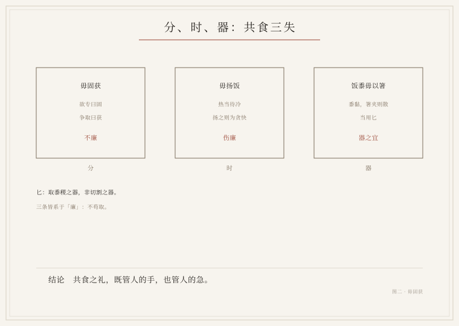

曲礼上 · 一·七十 · 第 68 课
三件事不许做：专取独得、争着多拿；把热饭扬起来散热；吃黍饭不要用筷子（该用匕）。
说什么事：毋固获，毋扬饭，饭黍毋以箸。
落在哪一层：仪。上节戒声与余，此节戒取与器。
为何编在此位：一·六十六戒「以术取多」，此节戒「以力争多」与「以器失宜」。
【经】毋固獲，毋揚飯，飯黍毋以箸。
【注】為其不廉也。欲專之曰固，爭取曰獲。飯熱當待冷，若揚去熱氣，則為貪快，傷廉也。飯黍無用箸，當用匕。
毋固获 注「为其不廉也。欲专之曰固，争取曰获」。疏引卢植：「固获取之，为其不廉也。」
毋扬饭 注「饭热当待冷，若扬去热气，则为贪快，伤廉也」。
饭黍毋以箸 注「当用匕」。疏引《少牢》「廪人溉匕与敦」，注「匕，所以匕黍稷」。
匕 取黍稷之器，今之饭勺。箸取块，匕取粒；黍黏，非匕不可。
不要专取独得、争着多拿；不要把热饭扬起来散热；吃黍饭不要用筷子。
三条戒，一在「分」，一在「时」，一在「器」。固获是夺人之分，扬饭是抢时之先，饭黍用箸是用器之失。共食之礼，既管人的手，也管人的急。
第一层 固与获之别 注分得极细：欲专之曰固（想把这一份独占），争取曰获（动手去抢）。前者是心，后者是手。礼先责心，再责手。
第二层 扬饭之贪快 热饭当待其自冷。扬之，是替时间加速。疏用「贪快」二字——礼所戒的不止贪多，还有贪快。
第三层 黍与箸 黍黏，箸夹则散；匕取则整。此条是器之宜。礼不抽象说「器各有宜」，只举一物：饭黍。读之可知其余。
第四层 三戒共一「廉」字 注于固获、扬饭皆言「不廉」「伤廉」。廉者，不苟取。共器之食，最试人能否「不苟取」。
与今日何干 今人转盘夹菜，一转到底者近于「固」；热汤未凉先喝、烫了又吹者近于「扬」。器之宜更显然：汤用勺，不用筷。
| 左 | 右 |
|---|---|
| 毋固获 | 欲专曰固，争取曰获；不廉 |
| 毋扬饭 | 热当待冷；扬之则贪快伤廉 |
| 饭黍毋以箸 | 黍黏，当用匕 |
| 匕 | 取黍稷之器，非刀 |
| 三戒 | 分、时、器，各有一失 |
画案上一只簋盛黍，黍面平整未被翻动，簋旁横放一把匕（勺形，柄短），另一侧放一双箸，箸距簋稍远、未使用。案角另有一小盂，盂中热气已散（无纹）。不画手、不画人、不写文字。赭色只在匕柄与箸头。
